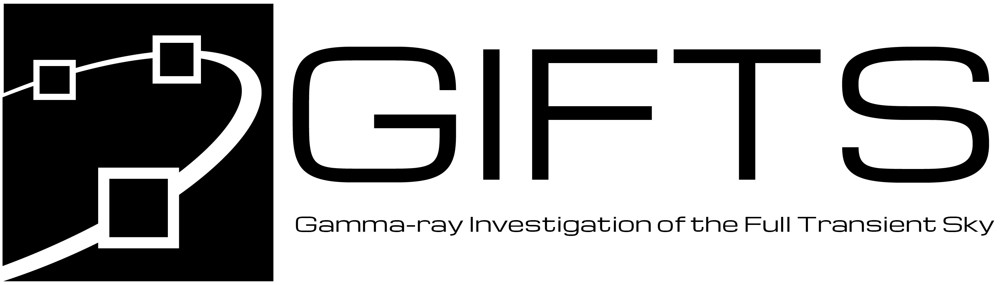

GIFTS Gamma-ray Data Tools Documentation¶

The GIFTS Gamma-ray Data Tools (GDT) is a toolkit for GIFTS data products, which is built on the GDT Core Package and Fermi Gamma-ray Data Tools.
Gamma-ray Investigation of the Full Transient Sky (GIFTS) is a 6U CubeSat under development, whose mission aim is the detection and localization of gamma-ray bursts (GRBs) from low Earth orbit in the multi-messenger era. The GIFTS instrument comprises six cerium bromide (\(\mathrm{CeBr}_3\)) scintillator detectors with different orientations, which are arranged into two three-detector clusters within the CubeSat housing, and will have the capability to detect gamma rays in an energy range of approximately 30 keV to 2 MeV. The current toolkit is a prototype that services an exemplar GIFTS catalog containing simulated GIFTS data products generated during payload processing pipeline development. This exemplar catalog illustrates the expected contents of the the public data catalog that will be provided following the GIFTS mission launch, which will also be accompanied by corresponding future versions of the toolkit.
Note
The current version of the toolkit is intended to be illustrative of the expected post-launch version, with the implementation and documentation intentionally inspired by and similar to that of the Fermi Gamma-ray Data Tools. It is envisaged that the toolkit and documentation will be significantly revised in future releases.
All GIFTS data product types are described using products contained in the current exemplar GIFTS burst catalog, which were created using the approach described in O’Callaghan et al., CubeSat payload processing pipeline development for gamma-ray burst detection, Journal of Astronomical Telescopes, Instruments, and Systems, Vol. 12, Issue 1 (2026).
Citing
If you use the GIFTS Gamma-ray Data Tools in your research and publications, please acknowledgment and cite this work (the entry for the journal paper will updated following publication) using the following BibTex entries:
@article{10.1117/1.JATIS.12.1.018004,
author = {Derek O'Callaghan and Alexey Uliyanov and Cathal McCabe and P{\'a}draig McDermott and Cu{\'a}n de Barra and Sheila McBreen},
title = {{CubeSat payload processing pipeline development for gamma-ray burst detection}},
volume = {12},
journal = {Journal of Astronomical Telescopes, Instruments, and Systems},
number = {1},
publisher = {SPIE},
pages = {018004},
keywords = {CubeSat, gamma-ray burst, payload, detection, simulation, catalog},
year = {2026},
doi = {10.1117/1.JATIS.12.1.018004},
URL = {https://doi.org/10.1117/1.JATIS.12.1.018004}
}
@misc{GDT-GIFTS,
author = {Derek O'Callaghan},
title = {GIFTS Gamma-ray Data Tools: v0.1.0},
year = 2026,
url = {https://github.com/GIFTS-6U/gdt-gifts}
}
@dataset{OCallaghanGiftsExemplarCatalog2026,
author = {Derek O'Callaghan},
title = {GIFTS Exemplar Gamma-ray Bursts (GRBs) Catalog [Data set]},
month = jan,
year = 2026,
publisher = {Zenodo},
version = {0.1.0},
doi = {10.5281/zenodo.17295200},
url = {https://doi.org/10.5281/zenodo.17295200},
}
Acknowledgments
This publication has emanated from research funded by Taighde Éireann - Research Ireland under Grant numbers 21/FFP-A/9043, 17/CDA/4723, 19/FFP/6777, and GOIPG/2023/3741 and also supported by the Disruptive Technologies Innovation Fund (Call 4), managed by the Department of Enterprise, Trade and Employment and administered by Enterprise Ireland. NSSPI: National Space Subsystems and Payloads Initiative, Contract Ref: DT 2021 0353.